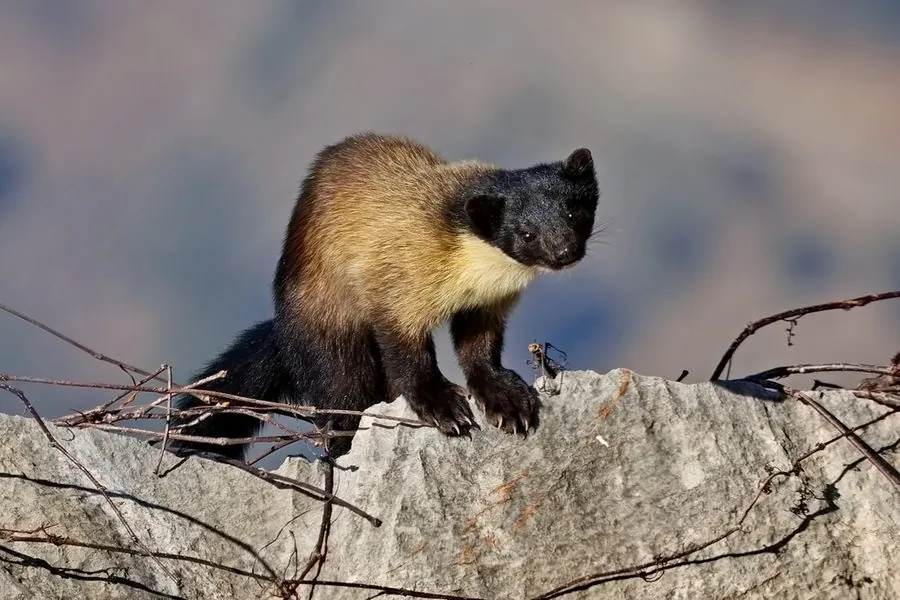

哺乳动物 · 动物界
黄喉貂 Martes flavigula

喉部至胸前一片明黄色的鼬科动物，体形细长、尾长近体长，善结群围猎，能捕食比自己更大的麂类与幼麝，是森林中的强悍猎手。
- 分类
- 门脊索动物门纲哺乳纲目食肉目科鼬科属貂属
- 栖息环境
- 亚热带常绿阔叶林、针阔混交林、竹林与山地灌丛
- 地理分布
- 中国东部与西南山地、俄罗斯远东、朝鲜半岛、东南亚至印度尼西亚
- 保护级别
- IUCN 无危（LC）；中国国家二级保护动物
物种志
黄喉貂体形细长，成年体长 45–70 厘米，尾长 35–45 厘米，体重 2–3 千克。毛色分区鲜明：头顶与背部呈棕褐至暗褐色，喉部、胸前和颈侧为明亮的橙黄色，故得名“黄喉”；腹部与四肢内侧淡黄，尾毛长而蓬松，尾端色深。头部小而吻尖，耳圆，四肢短健，爪半伸缩。
它们栖息于亚热带与温带山地森林、针阔混交林和竹林，善于攀爬，多在树上活动，也会在地面奔跑。食性极广，捕食鼠类、松鼠、鸟类、蛙、昆虫和果实，还吃蜂蜜，因此有“蜜狗”之称；常二三只结群合作，围猎幼麂、仔麝等较大猎物。晨昏活动最频繁，领域范围大而隐蔽。每年春夏繁殖，孕期约 220–290 天（有胚胎滞育），每胎 2–4 仔，由母兽独自育幼。
形态与习性
- 体长约 45–70 cm，尾长 35–45 cm
- 体重约 2–3 kg
- 食性鼠类、松鼠、鸟类、蛙、昆虫、果实与蜂蜜
- 繁殖春夏繁殖，孕期含滞育约 220–290 天，每胎 2–4 仔
- 活动节律晨昏活动为主，善攀树，常在地面与树冠间往返
- 捕猎方式常二三只结群围猎，可合作制伏幼麂与仔麝
- 寿命野外约 10 年，饲养下可达 14 年
趣味知识
- 黄喉貂喉部到胸前是一整片橙黄色，在暗色森林中很显眼。
- 它嗜食蜂蜜，常循着蜂巢气味攀树取食，因而被叫作“蜜狗”。
- 几只黄喉貂会分工围堵猎物，是鼬科中少见的合作猎手。